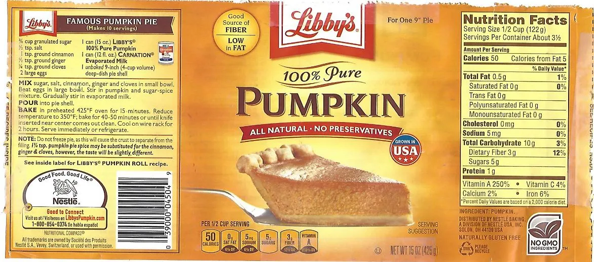

Libby's Famous Pumpkin Pie

Libby's Famous Pumpkin Pie is a classic recipe found on the back of Libby's cans of pumpkin labels. The following
recipe has been in circulation since 1950!
Starting around Halloween, have you ever noticed the cans of Libby's 100% pure pumpkin suddenly proliferating in your local grocery store?
Maybe you also noticed more cans of Nestle Carnation evaporated milk? Well, that's because these two go together like peanut butter and jelly
when it comes to making pumpkin pie!
The Libby's Famous Pumpkin Pie recipe can be found on the labels of Libby's 100% pure pumpkin cans, and dates back to 1950! It is one
of the easiest recipes you can find for pumpkin pie and the resulting pie is almost always fantastic. So, if you feel like making
some pumpkin pie for Thanksgiving, or maybe it's the middle of June and PSL season just can't get here fast enough, grab yourself a can
or follow this recipe (they're exactly the same), and get ready to stuff your face with delicious, fluffy pie!
Ingredients:
- 3/4 cups granulated sugar
- 1 tsp ground cinnamon
- 1/2 teaspoon salt
- 1/2 teaspoon ground ginger
- 1/4 teaspoon ground cloves
- 2 large eggs
- 1 can (15 oz) Libby's 100% pure pumpkin
- 1 can (12 fl oz) Nestle Carnation evaporated milk
- 1 9-in deep dish pie shell
Directions:
- Pre-heat oved to 425 F.
- Mix sugar, cinnamon, salt, ginger and cloves in small bowl.
- Beat eggs in larg bowl.
- Stir in pumpkin and sugar-spice misture.
- Gradually stir in evaporated milk until mixture is creamy and well-mixed.
- Pour mixture into pie shell.
- Place pie in oven and bake for 15 minutes.
- Reduce oven temperature to 350 F, and bake for another 40 minutes, or until a knife instered near center comes out clean.
- Let cool for 1.5-2 hours.
- Serve and enjoy!